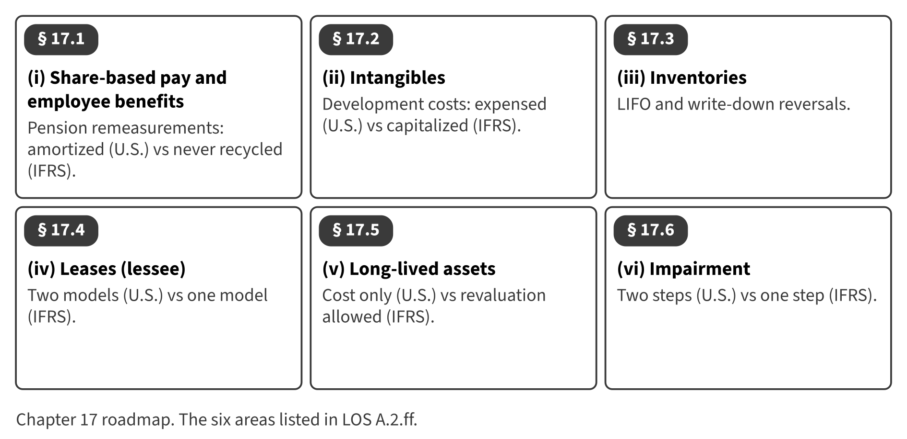

Part IV · Groups, IFRS contrasts and integrated reporting · Chapter 17
U.S. GAAP and IFRS: The Six Tested Differences
المبادئ المحاسبية الأمريكية والمعايير الدولية: الفروق الستة
Most companies in the Middle East and North Africa report under IFRS, but the CMA exam is based on U.S. GAAP. The LOS ask you to know six areas where the two frameworks differ. Earlier chapters showed each difference briefly; this chapter brings them together with one Orontes example per area.

Start here
Then
What this chapter is tested on
| LOS | Official statement (ICMA, 2024) | In plain words | Depth here |
|---|---|---|---|
| A.2.ff.i | identify and describe the following differences between U.S. GAAP and IFRS: … (i) expense recognition, with respect to share-based payments and employee benefits … | Describe the differences for share-based payments and employee benefits. | Full treatment |
| A.2.ff.ii | identify and describe the following differences between U.S. GAAP and IFRS: … (ii) intangible assets, with respect to development costs and revaluation … | Describe the differences for intangible assets, especially development costs. | Full treatment |
| A.2.ff.iii | identify and describe the following differences between U.S. GAAP and IFRS: … (iii) inventories, with respect to costing methods, valuation, and write-downs (e.g., LIFO) … | Describe the differences for inventories: LIFO, valuation and write-down reversals. | Full treatment |
| A.2.ff.iv | identify and describe the following differences between U.S. GAAP and IFRS: … (iv) leases, with respect to lessee operating and finance leases … | Describe the differences for a lessee's operating and finance leases. | Full treatment |
| A.2.ff.v | identify and describe the following differences between U.S. GAAP and IFRS: … (v) long-lived assets, with respect to revaluation, depreciation, and capitalization of borrowing costs … | Describe the differences for long-lived assets: revaluation, components and borrowing costs. | Full treatment |
| A.2.ff.vi | identify and describe the following differences between U.S. GAAP and IFRS: … (vi) impairment of assets, with respect to determination, calculation, and reversal of loss … | Describe and calculate the differences in impairment testing and reversal. | Full treatment |
The official statements are quoted from the ICMA Learning Outcome Statements (effective September 1, 2024). The plain-words column restates them in simpler English. The exam may test any outcome up to Level C.
What you already know
If you trained in IFRS, your habits will be the traps in this chapter: capitalizing development, reversing write-downs, revaluing assets and using value in use. For each area, learn the U.S. rule first and treat IFRS as the contrast.
The 8 key terms
Every scene has Check Answers and Try Again. Try Again reshuffles rather than revealing. When you are wrong, the first thing you read is the reason for the option you chose, taken from the book's own explanations. Progress is saved in this browser.